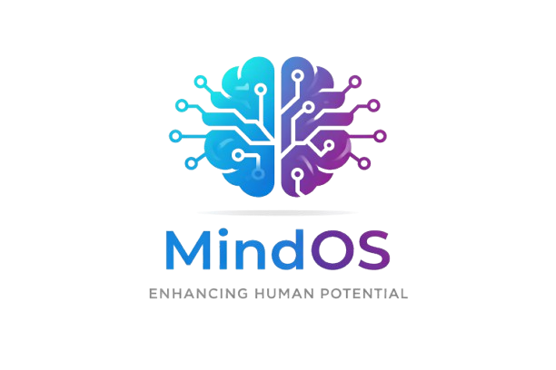
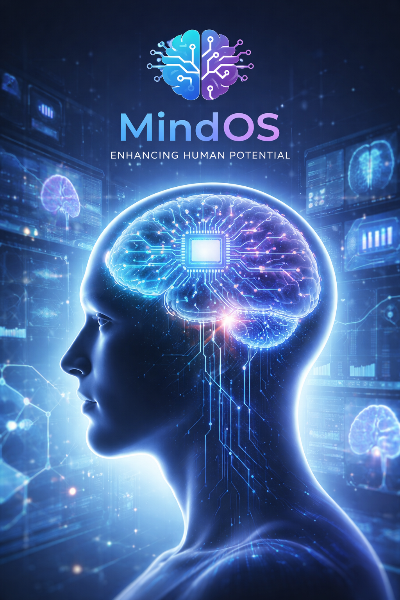

Institut de recherche


Une puce cérébrale est un micro-dispositif technologique capable de communiquer avec certaines zones du cerveau afin de capter ou stimuler des signaux neuronaux, dans un cadre strictement contrôlé.
MindOS est une entreprise fictive de technologie avancée spécialisée dans le développement d’interfaces cerveau-machine de nouvelle génération. À la croisée des neurosciences, de l’intelligence artificielle et de l’ingénierie numérique, nous concevons des solutions innovantes visant à améliorer l’interaction entre l’esprit humain et les systèmes technologiques.
Notre ambition est de repousser les limites du potentiel humain, tout en plaçant la sécurité, l’éthique et la transparence au cœur de chaque innovation. Les technologies MindOS sont pensées pour accompagner la recherche scientifique, soutenir les avancées médicales et ouvrir de nouvelles perspectives dans la compréhension du cerveau.
Chez MindOS, nous croyons que la technologie doit rester au service de l’humain. C’est pourquoi nos travaux s’inscrivent dans un cadre strictement encadré, responsable et respectueux des données cognitives.